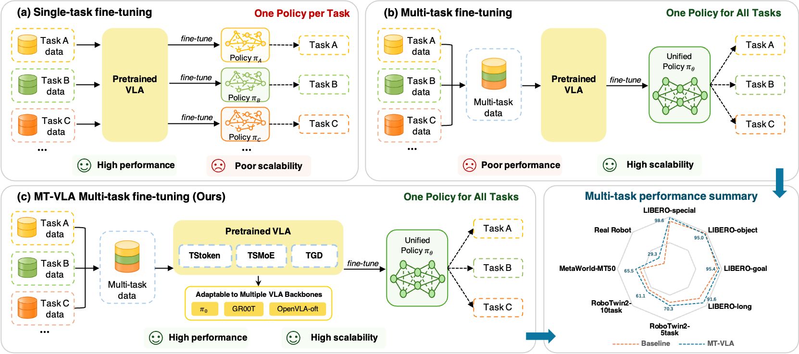
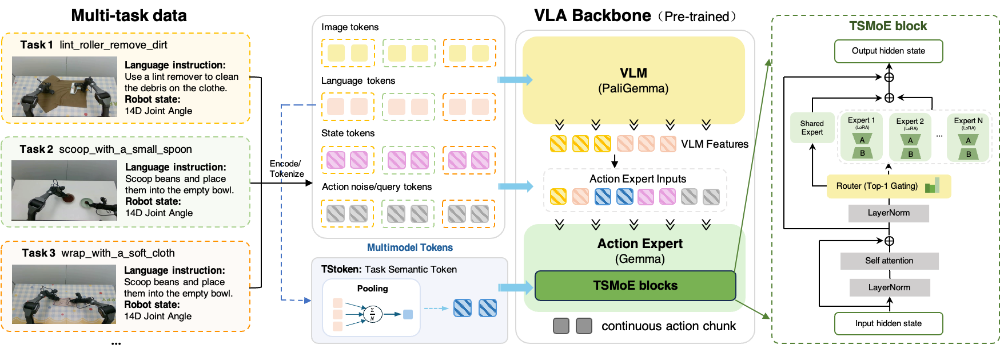
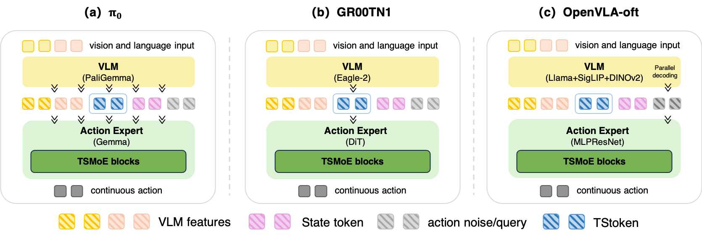

CoRL 2026 Submission
MT-VLA: Task-Semantics-Driven Expert Adaptation for Multi-Task Vision-Language-Action Models
A unified multi-task post-training framework that injects task semantics into VLA action generation, combines shared action priors with task-specialized experts, and reduces cross-task gradient conflict.

Key Results
One Policy, Stronger Multi-Task Performance
Abstract
Task Semantics for Scalable VLA Post-Training
Vision-Language-Action (VLA) models have shown strong potential for general-purpose robotic perception, language understanding, and control, yet their post-training remains difficult to scale. Fine-tuning a separate policy for each task often yields strong task-specific performance, but it requires training and maintaining many models. Training a single policy across multiple tasks is more scalable, but it often suffers from heterogeneous action distributions, interference between task semantics, and conflicting optimization signals.
MT-VLA addresses this problem with a task-semantics-driven framework for unified multi-task post-training. It explicitly injects task semantics into action generation, decomposes the policy space with structured expert adaptation, and applies task-aware gradient decoupling to reduce optimization conflicts. Experiments on LIBERO, Meta-World, RoboTwin 2.0, and real-world bimanual robot tasks show consistent gains over standard multi-task post-training.
Method
Task-Semantic Expert Adaptation
MT-VLA leaves the VLM backbone intact and adapts the action-generation path, making the framework applicable across different VLA architectures.

TStoken
Constructs a task-semantic token from language instructions and injects it into the action-side sequence for explicit task conditioning.
TSMoE
Routes action-side hidden states through lightweight low-rank experts while retaining a shared branch for task-invariant action priors.
TGD
Groups samples by instruction semantics and projects conflicting shared-parameter gradients to stabilize multi-task optimization.
Backbone Compatibility
Plug-and-Play Across VLA Architectures
The framework is decoupled from a specific action-generation paradigm. The paper applies MT-VLA to π0, GR00T N1, and OpenVLA-OFT by inserting TStoken and TSMoE blocks into the action expert path without modifying the VLM backbone.

Experiments
Consistent Gains in Simulation
Across LIBERO, Meta-World MT50, and RoboTwin 2.0, MT-VLA improves the standard multi-task baseline and narrows the gap to single-task specialists. For RoboTwin, avg. denotes the mean success rate across Easy and Hard settings.
average success rate under the π0 multi-task setting
average success rate on MT50 difficulty groups
average of Easy and Hard success rates
average of Easy and Hard success rates
LIBERO and Meta-World Simulation Benchmarks
Success rates (%) from the main simulation benchmark table.
| Paradigm | Method | Spatial | Object | Goal | Long | Avg. |
|---|---|---|---|---|---|---|
| Specialist | OpenVLA | 84.7 | 88.4 | 79.2 | 53.7 | 76.5 |
| WorldVLA | 87.6 | 96.2 | 83.4 | 60.0 | 81.8 | |
| NORA | 92.2 | 95.4 | 89.4 | 74.6 | 87.9 | |
| π0 | 94.0 | 94.8 | 92.6 | 82.2 | 90.9 | |
| GR00T N1 | 93.0 | 99.6 | 95.2 | 91.4 | 94.8 | |
| OpenVLA-OFT | 97.1 | 99.3 | 97.6 | 91.8 | 96.5 | |
| Multitask | SmoVLA | 93.0 | 94.0 | 91.0 | 77.0 | 88.8 |
| DM0 | 98.2 | 98.8 | 96.6 | 82.6 | 94.1 | |
| UnifiedVLA | 95.4 | 98.8 | 93.6 | 94.0 | 95.5 | |
| π0 baseline | 93.9 | 95.3 | 91.4 | 80.4 | 90.3 | |
| π0 MT-VLA | 98.6 | 95.0 | 95.4 | 91.6 | 95.4 | |
| Improvement | +4.7 | -0.3 | +4.0 | +11.2 | +5.1 | |
| GR00T N1 baseline | 88.4 | 98.4 | 96.8 | 90.4 | 93.5 | |
| GR00T N1 MT-VLA | 93.0 | 98.6 | 97.4 | 93.4 | 95.6 | |
| Improvement | +4.6 | +0.2 | +0.6 | +3.0 | +2.1 | |
| OpenVLA-OFT baseline | 96.6 | 99.2 | 96.0 | 92.2 | 96.0 | |
| OpenVLA-OFT MT-VLA | 98.6 | 99.6 | 97.8 | 96.0 | 98.0 | |
| Improvement | +2.0 | +0.4 | +1.8 | +3.8 | +2.0 |
| Paradigm | Method | Easy | Medium | Hard | Very Hard | Avg. |
|---|---|---|---|---|---|---|
| Multitask | Diffusion Policy | 23.1 | 10.7 | 1.9 | 6.1 | 10.5 |
| TinyVLA | 77.6 | 21.5 | 11.4 | 15.8 | 31.6 | |
| SmoVLA | 87.1 | 51.8 | 70.0 | 64.0 | 68.2 | |
| π0 baseline | 71.1 | 53.6 | 51.7 | 52.0 | 57.1 | |
| π0 MT-VLA | 77.9 | 63.6 | 58.3 | 62.0 | 65.5 | |
| Improvement | +6.8 | +10.0 | +6.6 | +10.0 | +8.4 |
RoboTwin 2.0 Simulation Benchmark
Success rates (%) under Easy and Hard settings. Avg. is the mean of Easy and Hard.
| Setting | Specialist π0 | Multitask π0 | MT-VLA | Improvement |
|---|---|---|---|---|
| 5-task Easy | 80.2 | 85.6 | 89.6 | +4.0 |
| 5-task Hard | 48.8 | 42.2 | 51.0 | +8.8 |
| 5-task Avg. | 64.5 | 63.9 | 70.3 | +6.4 |
| 10-task Easy | 73.1 | 81.9 | 84.3 | +2.4 |
| 10-task Hard | 40.3 | 30.4 | 37.8 | +7.4 |
| 10-task Avg. | 56.7 | 56.2 | 61.1 | +4.9 |
Real Robot
ALOHA Bimanual Manipulation
The real-world evaluation covers 10 long-horizon bimanual tasks, including cleaning, packing, placing, wiping, stamping, and wrapping. MT-VLA follows the same multi-task data protocol as the baseline and improves process scores on every reported task.
10 tasks
+14.6 avg. score gain
~2x over the baseline
Citation
BibTeX
@inproceedings{yang2026mtvla,
title={MT-VLA: Task-Semantics-Driven Expert Adaptation for Multi-Task Vision-Language-Action Models},
author={Yang, Jiahe and Yan, Ziwei and Wang, Tiancai and Tang, Chen and Ji, Zhong},
booktitle={Submitted to the 10th Conference on Robot Learning},
year={2026}
}